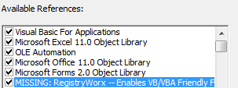

Ошибка - Cant find project or library
Вы сами написали макрос и кому-то выслали. Макрос хороший и рабочий. Вы сами проверили и перепроверили. Но тут Вам сообщают - "Макрос не работает". Выдает ошибку - Can't find project or library. Вы запускаете файл - нет ошибки. Еще раз - нет. Как ни пытаетесь, какие данные не подсовываете, а ошибки такой нет. Вы уверены, что файл рабочий полностью(и верно - ведь у Вас работает), а Вам пытаются доказать обратное. Вы начинаете долго объяснять как пользоваться, что делать и т.д. и т.п. Ошибка не исчезает. Что делать-то? В чем проблема? Даже офис переустановили - у Вас работает, у них нет. А проблема проста: как и любой программе, VBA нужно иметь свой набор библиотек и компонентов, посредством которых он взаимодействует с Excel(и не только). И в разных версиях Excel эти библиотеки и компоненты могут различаться. И когда Вы делаете у себя программу, то VBA ставит ссылку(или же Вы сами) на какой-либо компонент либо библиотеку, которая может отсутствовать на другом компьютере. Вот тогда и появляется эта ошибка. Что же делать? Все очень просто:

Эти действия необходимо проделать, когда выполнение кода прервано и ни один код проекта не выполняется. Возможно, придется перезапустить Excel. И все это должен проделать человек, у которого данная ошибка возникла. Это не всегда удобно. А поэтому лично я рекомендовал бы не использовать сторонние библиотеки и раннее связывание, если это не вызвано необходимостью. Всегда проверяйте ссылки в файлах перед отправкой получателю. Оставьте там лишь те ссылки, которые необходимы, либо которые присутствуют на всех версиях. Смело можно оставлять следующие(это касается именно VBA-Excel):
Может я перечислил не все - но эти точно имеют полную совместимость между разными версиями Excel.
Еще, для автоматического поиска и отключения ошибочных ссылок на такие библиотеки можно делать и макросом:
Sub Remove_MISSING() Dim oReferences As Object, oRef As Object Set oReferences = ThisWorkbook.VBProject.References For Each oRef In oReferences If (oRef.IsBroken) Then oReferences.Remove Reference:=oRef Next End Sub
|
1 2 3 4 5 6 7 |
Dim oReferences As Object, oRef As Object Set oReferences = ThisWorkbook.VBProject.References |
Но для работы этого макроса необходимо:
Так же Can't find project or library возникает если у Вас просто не подключена какая-либо библиотека, которая используется в коде. Тогда не будет MISSING. Надо просто определить, в какую библиотеку входит константа, объект или свойство, которое выделяет редактор при выдаче ошибки, и подключить эту библиотеку.